Hello!
DON'T LOSE YOUR HEAD!
THE STATE OF DECOUPLING UMBRACO IN 2019
"Going Headless"
We have a lot to
consider these days...
Digital Signage
Interactive Kiosks
Telephone Systems
Chatbots
Facebook Messenger, WhatsApp
Conversational Interfaces
Amazon Echo, Google Home
Virtual Reality
Augmented Reality
What are our
architecture options?
COUPLED
DECOUPLED
What is Coupled?
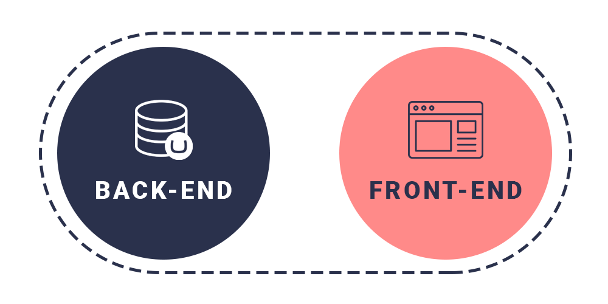
What is Decoupled?
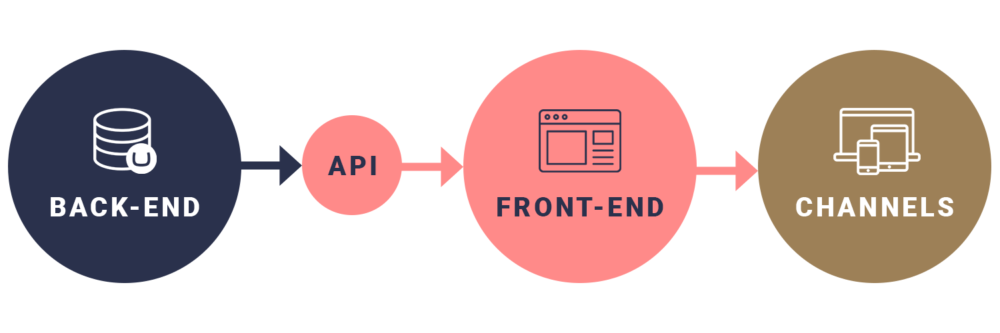
What is Decoupled?
Breaking it down
HYBRID, PROGRESSIVELY DECOUPLED
FULLY DECOUPLED STATIC
FULLY DECOUPLED HEADLESS
Coupled
Traditional Umbraco
Hybrid
Progressively Decoupled Umbraco
Facebook BigPipe
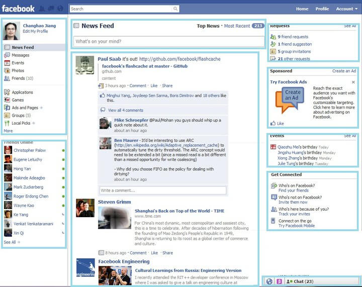
Full Decoupled
Static Sites
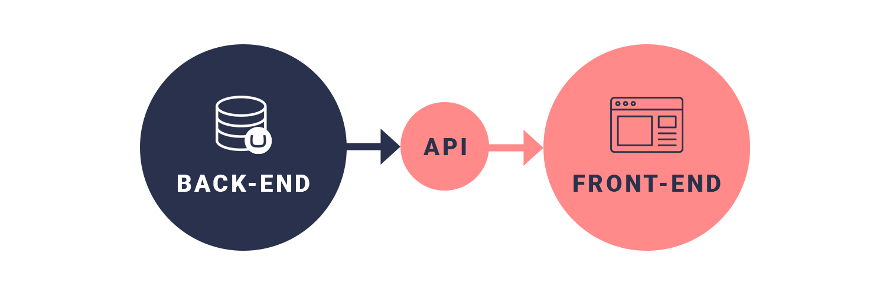
JAMstack?
Full Decoupled
Headless
What's the different
in decoupling?
What are the advantages
to each approach?
Advantages of Coupled
- Established. What we already know.
- All Umbraco features out-of-the-box
- Previewing, URL management, etc
- Content tree/structure drives website
Advantages of Hybrid
- Same as Coupled
- Performance gains
- Steps towards Decoupling (mindset)
Advantages of Decoupled
(in general)
- Clean, accessible and scaleable APIs
- Separation of upgrades (from CMS)
- Separation of channel redesigns
- Less reliance on Umbraco specialists
- Adopt cutting-edge frontend technologies
Advantages of
Decoupled Static
- Static, secure, CDN
- Reproducible, repeatable
- Technology choices
- Cheap hosting
Advantages of Headless
- True separation of concerns
- Multi-channel
- Future proof
What are the disadvantages
to each approach?
Disadvantages of Coupled
- Hosting, memory, costs
- Developer skill-set
- Razor templating only
Disadvantages of Hybrid
- Same as Coupled
- Team size and skill-sets (both .NET and JS)
Disadvantages of Decoupled
(in general)
- Monolithic becomes Polylithic
- Umbraco out-of-the-box functionality only works for the back-end
- The minimum team size is higher for efficient development
- Needs organisational buy-in
Disadvantages of Decoupled Static
- Lose built-in previewing
- Lose built-in templating
- Potential disconnect from Content structure
- Dynamic features, e.g. forms/membership
Disadvantages of Headless
- Same as Decoupled
- Further disconnect from Editors
How do we decide?
Let's look at the scenarios...
What do you
intend to build?
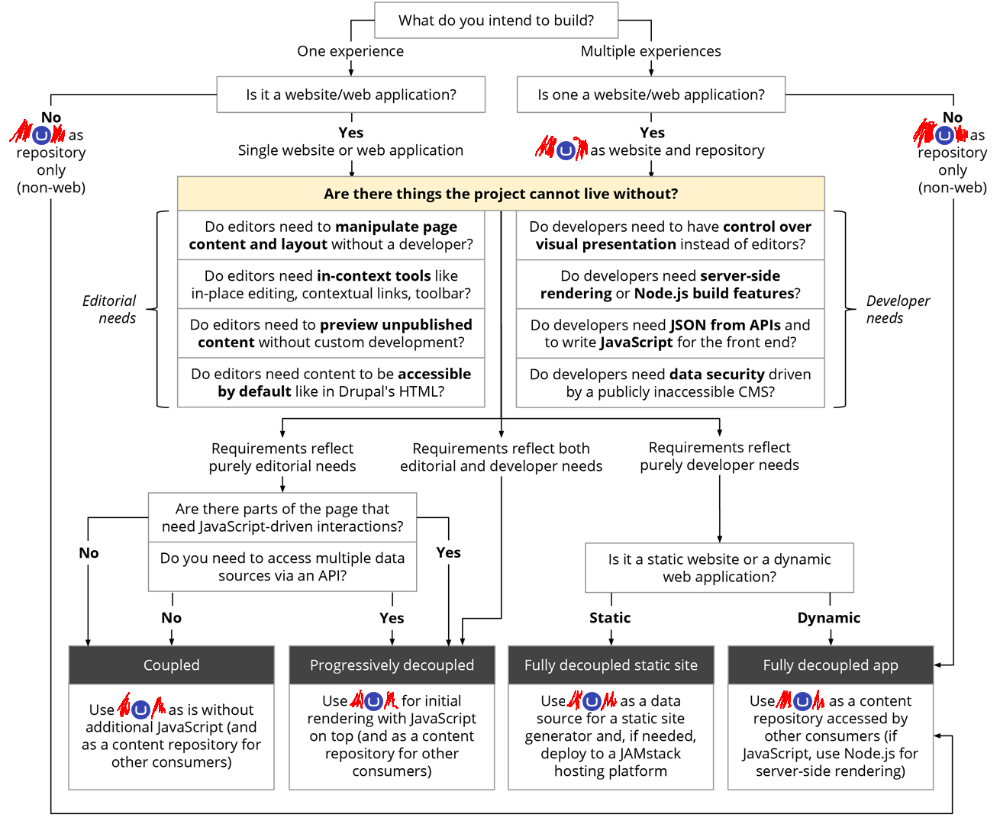
One experience
or multiple experiences?

Is there a
website/web-app?
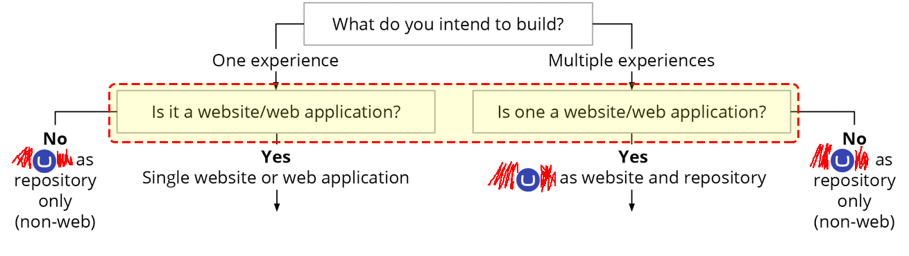
If No,
then...
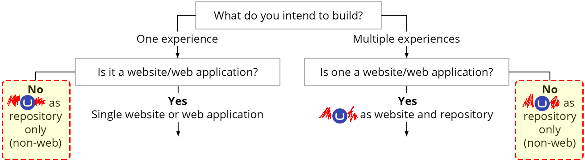
If Yes,
then...
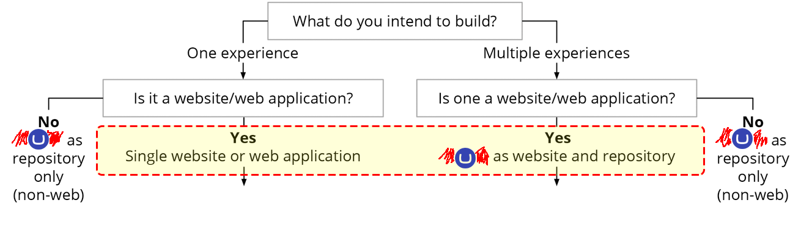
Building a
single web experiences
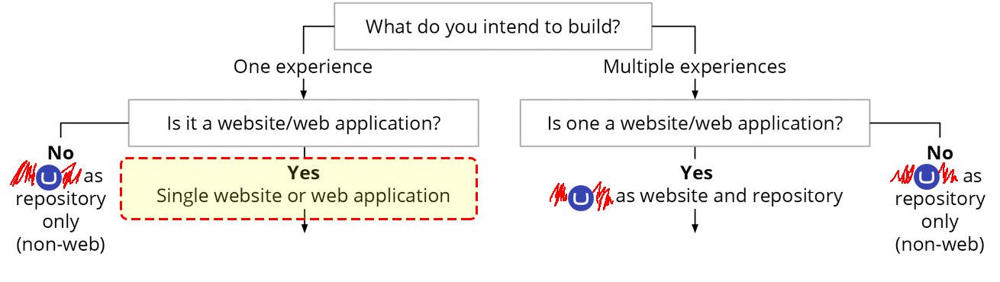
Building
non-web experiences
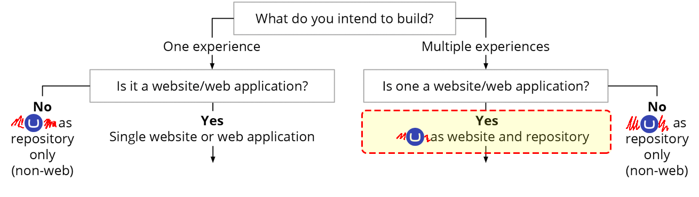
Umbraco can
support all these
use cases
Evaluation process
Are there things the
project cannot live without?
- Editorial needs
- Developer needs
What can we live without?
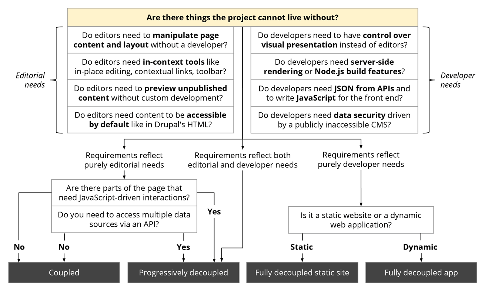
What are the
Editors needs?
- Content Layout - Grid, RTE, Macros, Stacked Content
- Previews
- Templating, Macros
- Content tree, URL structure/management
- Accessibility (WAI-ARIA) of content
What are the
Developers needs?
- Control over visual presentation (instead of Editors)
- Templating skill-set
- Server-side rendering
- Build Tasks (bundling & minification)
- Data from APIs (GraphQL)
- Security practices for those APIs
Let’s look at
our options...
Option 1
Requirements reflect purely editorial needs
- Will there be any user interactions?
- Access multiple data sources?
If Yes...
(to either question)
Progressively Decoupled
If No...
(to either question)
Coupled
Traditional Umbraco
Option 2
Requirements reflect purely developer needs
- Is it a static website or dynamic web application?
If Static...
Fully Decoupled
Static Site
If Dynamic...
Fully Decoupled
Headless
Option 3
Requirements reflect both editorial and developer needs
Progressively Decoupled
Considerations
(if choosing any decoupled option)
Frontend developers may not have Umbraco/CMS experience or knowledge
Who influences the CMS design/experience? Who dictates the richness of content?
Frontend developers would
opt for a simple 'model'
e.g. key/value data response
Important message
Don't forget the Editor experience
Current and future trends
for Editor & Developer complexities
We have choices
don't feel pressured
Lee's Umbraco Innovation Talk
Bingo Card
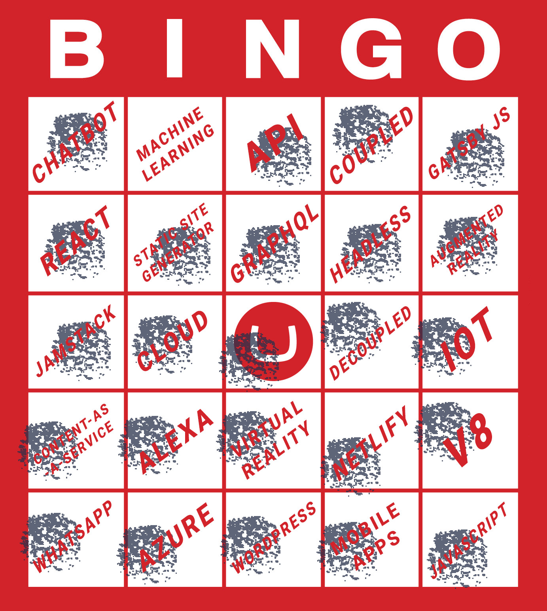
Thank you!
leekelleher.com/contact
@leekelleher